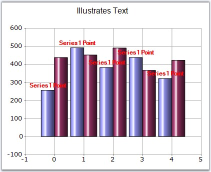
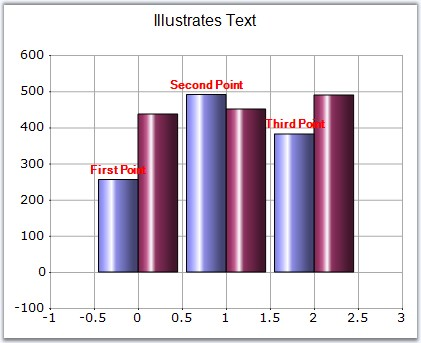
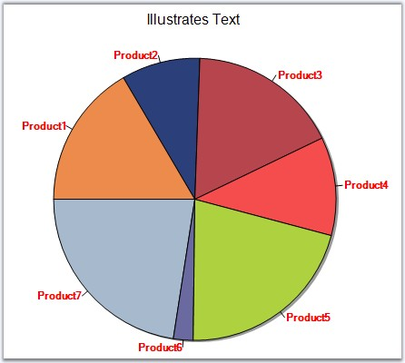

Series Wide Setting
Datapoint labels for a series can be specified using Series.Style.Text property.
|
[C#]
//labels for the series chartControl1.Series[0].Style.DisplayText = true; chartControl1.Series[0].Style.Text = "Series1 Point"; |
|
[VB.NET]
'labels for the series chartControl1.Series[0].Style.DisplayText = True chartControl1.Series(0).Style.Text = "Series1 Point" |

Figure 216: DataPoint Labels displayed for the Series
Specific Data Point Setting
Labels for specific data points can be specified through Series.Styles[0].Text property.
|
[C#]
//labels for the individual datapoints in the series chartControl1.Series[0].Style.DisplayText = true; chartControl1.Series[0].Styles[0].Text = "First Point"; chartControl1.Series[0].Styles[1].Text = "Second Point"; chartControl1.Series[0].Styles[2].Text = "Third Point"; |
|
[VB.NET]
'labels for the individual datapoints in the series chartControl1.Series[0].Style.DisplayText = True chartControl1.Series(0).Styles(0).Text = "First Point" chartControl1.Series(0).Styles(1).Text = "Second Point" chartControl1.Series(0).Styles(2).Text = "Third Point" |

Figure 217: Using Series.Styles[0].Text in Column Chart

Figure 218: Using Series.Styles[0].Text in Pie Chart
See Also